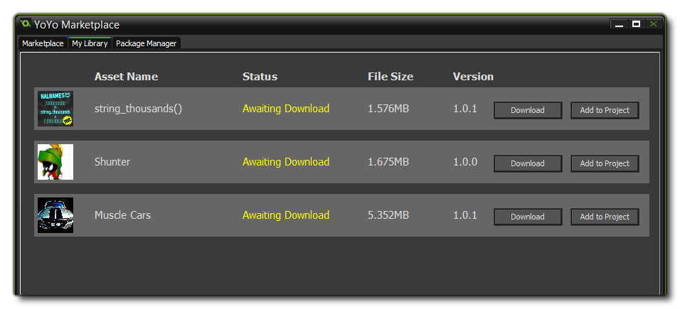

Marketplace
This section deals with asset packages and the YoYo Games Marketplace.
Marketplace is the YoYo Games on-line market for buying and selling asset packages. An asset package can be just about anything related to Gamemaker: Studio, ie: sprites, scripts,
shaders, or even full game engines or frameworks. To be able to create, buy and sell packages, you must first be registered on Marketplace as a publisher and have signed in from the GameMaker: Studio
main window Marketplace menu. You can find full details of how to become a publisher from the YoYo Games knowledge
base article Marketplace - Setting Up A Publisher Account.
NOTE: To be able to use asset packages, you must have previously created a user profile certificate. You can do this from the Marketplace properties window, which is explained below..
Once you have logged in you will be presented with the main Marketplace window:
Here you can access your user account (and it's linked publisher accounts) from the top right of the page, and you can also browse and buy or download asset packages for use. You can find full information on how to
buy and download an asset package from the YoYo Games Knowledge Base article Marketplace - Purchasing An Asset Pack.
My Library
The My Library tab shows you the packages that you have bought and gives you the option to download them and/or add them to your project.

Adding an asset package to a project will download it first before adding it's contents into the resource tree for the current project. Once it has been added, the assets it contains will have their own folder to make
locating them easier in the resource tree.
NOTE: Packages are downloaded to the local app data folder for Game Maker: Studio - %localappdata%\GameMaker-Studio\lib.
With the assets added to your resource tree, you can now go ahead and use them in your game as you would those assets that you have created yourself. You should note, that assets downloaded form Marketplace
are for individual use and cannot be shared to 3rd parties, although you can back them up and copy them to other locations for safety.
Package Manager
The package Manager tab is where you create and upload any asset packages that you have made for selling on Marketplace.

Clicking on the "Create New Asset Package" button will open up the package creation wizard, where you can give the details of the package you are making, add the resources from the project, and then review
the final package before it is created. once it has been created, you will see it listed in the main window, with options to Edit it or Upload it to Marketplace. You can find full details of how to create
and upload an asset package from the YoYo Games Knowledge Base article Creating And Uploading An Asset Package To Marketplace.
Marketplace Properties
You can access the Marketplace Properties window from the Marketplace drop down menu. Here you can set certain
options related to how GameMaker: Studio will download or update your asset packages.

You can set GameMaker: Studio to automatically download any updates to the packages you have bought.
The properties window also has a tab labelled Certificate. This tab is used to create your profile certificate, which is then used to verify your uploads to Marketplace and for signing them.
You should fill out the following details:
- Publisher Name: The name of the publisher of the assets being uploaded (this is obligatory).
- Location: The city that the company or organisation is based in.
- Country: The country that the company or organisation is based in.
Only the Publisher Name field is obligatory, so if you are an individual developer then you are fine filling out only that part. Next you should choose a password that will be used to protect the certificate file that we
want to generate, and then set the location to save the file to (you can name the file anything you wish too, as long as the extension remains *.pem). Now Click on the Generate Certificate button to save
the file, and it will be used by GameMaker: Studio from now on for submitting to the asset store (basically it proves that you are who you say you are and have permission to modify the content).
NOTE: We recommend that you take a screenshot of the actual settings as well as make a copy of the PEM file. Both should be saved together to a safe location for future reference, or in case you need
to re-install GameMaker: Studio at some point. You cannot update assets that have already been uploaded unless the updated package is signed using the same certificate that the original was created with.
© Copyright YoYo Games Ltd. 2014 All Rights Reserved